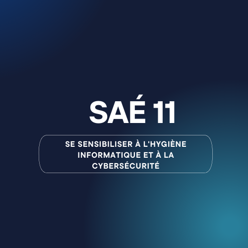
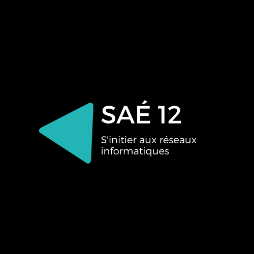
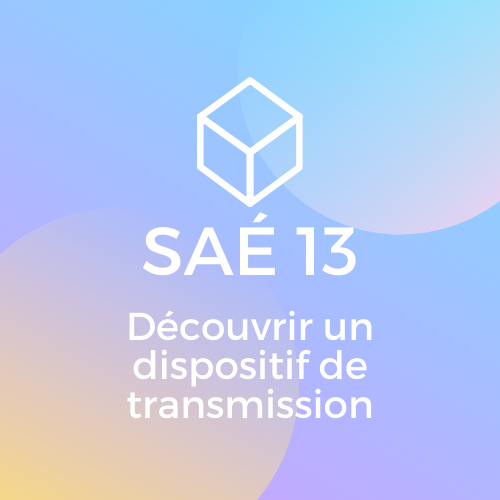
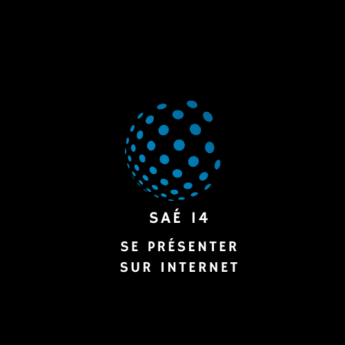
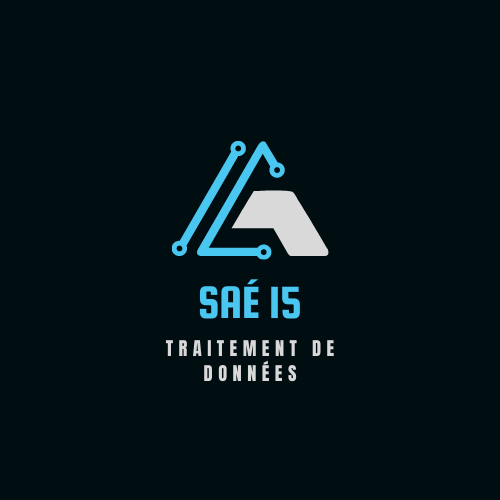
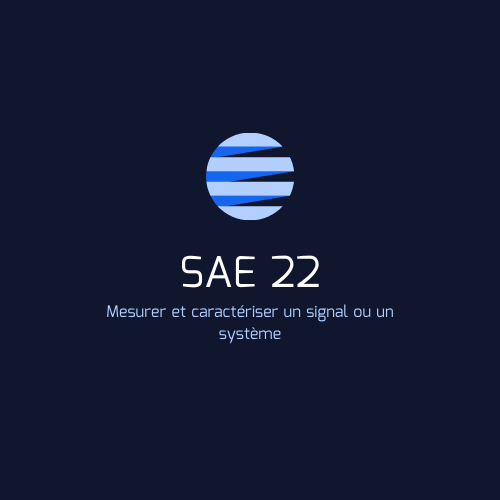
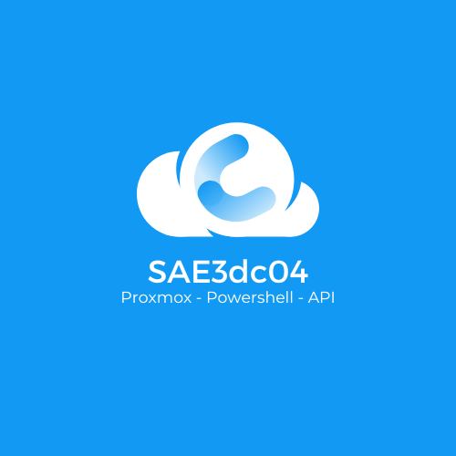
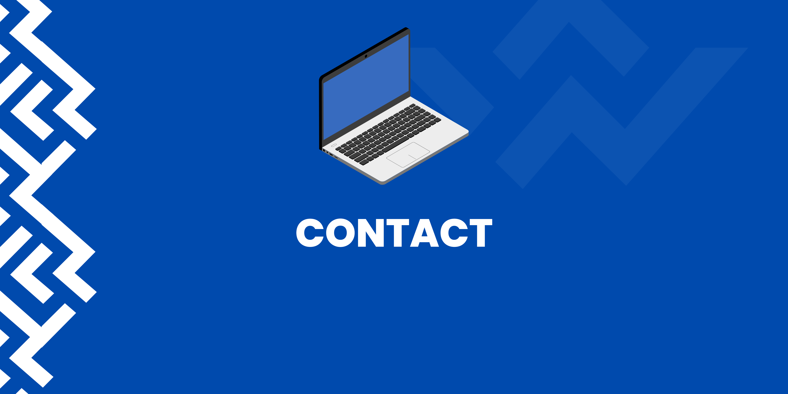

A propos

Bonjour et bienvenue ! Je suis EL SHAMY Youssef, étudiant en BUT Réseaux & Télécommunications à l'IUT de Villetaneuse spécialité cybersécurité.
J'ai hâte de défendre les réseaux et systèmes d'informations après mes études en tant qu'analyste SOC. Ce domaine en constante évolution me permets d'en apprendre tous les jours et attire ma curiosité sur les techniques et outils utilisé pour attaquer et surtout défendre un réseau et un système informatique.
Mes principales qualités :
- Curieux - persévérant - Ambitieux
Zoom sur :
Ma passion pour la cryptographie :
Jeune, j’ai été fasciné par les codes secrets et les messages cachés. À ma plus grande surprise, le meilleur moyen de “cacher” des informations était d’utiliser la cryptographie, et c’est là que tout a commencé. Je m’amusais à décoder des messages simples, cela m’a permis de mieux comprendre le fonctionnement de ces systèmes bourrés de technologie. Plus tard, j’ai commencé à lire des ouvrages techniques écrits par des experts en cryptographie, ma passion n’a cessé de grandir. Aujourd’hui, je pense que cette passion m’a permis de :
- Lire et comprendre des algorithmes de cryptographie
- Analyser et décrypter des systèmes de sécurité informatique
- Mieux comprendre les techniques de protection des données utilisées par les entreprises de technologie
Quelques ouvrages sur la cryptographie :
- Bitcoin: A Peer-to-Peer Electronic Cash System - Satoshi Nakamoto
- GPG / PGP - Paf LeGeek
- Da Vinci Code - Dan Brown
Projets
En quoi consiste nos projets ?
Dans nos projets nous essayons de nous rapprocher le plus de la réalité des SI en entreprise. Nous mettons en place des sytème de détection et de réponse contre les attaque suivant des normes reconnues internationnalement comme la norme ISO 27001 et le RGPD et en apprennons d'avantage tous les jours grâce aux intérvenants professionnels.
Présentation de mes projets :
SAÉ 11

Se sensibiliser à l'hygiène informatique et à la cybersécurité
Lors de ce projet, j'ai pu compléter le MOOC de l'ANSSI,
cette formation a approfondit mes connaissances en
matières d'hygiène informatique et de cybersécurité.
A la suite du MOOC, nous avons créé une affiche de prévention et de recommendations au sujet des mots de
passe. Voir l'affiche.
Ressources utilisées lors de cette SAÉ:
- Le MOOC de l'ANSSI
- Outils de conception graphique: Canva
SAÉ 12

S'initier aux réseaux informatiques
Lors de ce projet, j'ai mis en place des Vlans, le protocole Spanning Tree et j'ai récupéré des configurations de Switchs et routeurs sur le logiciel de simulation "Cisco Packet Tracer".
Cette SAE m'as permis de renforcer mes connaissances en matière de configuration des équipements Cisco, mais aussi de mieux comprendre le fonctionnement d'un réseau.
Ressources utilisées lors de cette SAÉ:
SAÉ 13

Découvrir un dispositif de transmission
Tout au long de ce projet, j'ai pu prendre des mesures sur un cable RJ45 grace a un "Fluke", j'ai ensuite interprété ces résulats dans un tableur ou j'ai pu découverir les propriétés d'un support cuivre.
Cette SAE m'as permis de mieux comprendre les supports de transmission que nous utilisons au quotidien pour communiquer avec le reste du monde.
Ressources utilisées lors de cette SAÉ:
- Appareil de mesure Fluke
- Tableur (Excel)
- Logiciel Fluke
SAÉ 14

SAÉ 14 : Se présenter sur internet
L’objectif de cette SAE était de mettre en place un portfolio sur le Web.
Le portfolio regroupe mon CV, la présentation des compétences acquises, ma vidéo de présentation en anglais et prochainement mes projets personels.
Cette SAE m'as aider à mieux comprendre commment se mettre en valeur dans le monde professionnel, mais aussi comment mieux maitriser mon code. D'ailleurs ce site est le résultat de la SAE 14.
Ressources utilisées lors de cette SAÉ:
- HTML
- CSS
- JS
- Serveur web : AlwaysData
- Framework : Bootstrap
SAÉ 15

Traitement de données
Durant ce projet, j'ai pu apprendre à claser des données depuis un fichier en CSV. J'ai pu localiser l'endroit des caméras implanter dans une région doné.
Ressources utilisées lors de ce projet:
SAÉ 21
Construire un réseau informatique pour une petite structure
Lors de cette SAÉ, j'ai configuré des serveurs Linux (Centos8) et installé des services comme Apache, MariaDb, Grafana, Prometheus et Nextcloud.
J'ai aussi créé des routeurs virtuels pour pouvoir mettre en réseau mes serveurs. Des IP flottantes m'ont permis d'accéder à mes serveurs depuis n'importe quel endroit en ssh.
Ressources utilisées lors de cette SAÉ:
- OpenStack
- Windows 10
- Centos8 CLI & GUI
- Lamp (Linux, Apache, MariadB/MySQL, PHP)
- Nextcloud
- Grafana, Prometheus
SAÉ 22

Construire un réseau informatique pour une petite structure
Lors de cette SAÉ, j'ai configuré des serveurs Linux (Centos8) et installé des services comme Apache, MariaDb, Grafana, Prometheus et Nextcloud.
J'ai aussi créé des routeurs virtuels pour pouvoir mettre en réseau mes serveurs. Des IP flottantes m'ont permis d'accéder à mes serveurs depuis n'importe quel endroit en ssh.
Ressources utilisées lors de cette SAÉ:
- OpenStack
- Windows 10
- Centos8 CLI & GUI
- Lamp (Linux, Apache, MariadB/MySQL, PHP)
- Nextcloud
- Grafana, Prometheus
SAÉ3dc04

Mettre en place une infrastructure virtualisée
Lors de ce projet universitaire, nous avons du :
- Mettre en place un réseau virtualisé
- Installer la plateforme "Proxmox"
- Créer des VMs et des conteneurs
- Monter deux serveurs Proxmox en cluster
- Configurer le routage et les VLANs
- Installer des services : DNS, HTTP, AD, DHCP
- Programmer en PowerShell pour manipuler l'API Proxmox
Résultats du projet en quelques points :
- 20 Machines Virtuelles (CentOS et W10)
- 2 Conteneurs LXC (HTTP et DNS)
- Infrastructure completement virtualisée, connectée à Internet
- Accès aux deux serveurs Proxmox à distance
- Controle total sur notre infrastructure grace au script PowerShell
Compétences mis en oeuvre :
- Maitrise des bases de la virtualisation
- Implémentation de concepts orientés réseaux
- Travil d'équipe
Ressources utilisées lors de cette SAÉ:
- Proxmox
- API Proxmox
- Centos8
- Active Directory
- Powershell
- Cisco IOS
Compétences Techniques :
- Configuration Réseau
- Sécurisation d'un système informatique
- Administration Système
- Développement HTML & CSS
Formations :
Cycle d'ingénieur Réseaux & Télécommunications
ESIEE paris - Villejuif - 2025 - 2028
BUT Réseaux & Télécommunications
Université Sorbonne paris Nord - IUT de villetaneuse - Depuis 2021
Parcours Cybersécurité
Baccalauréat Technologique STI2D SIN
Lycée Charle De Gaulle - Poissy - 2019-2022
Baccalauréat avec mention Très Bien
Expériences :
Le caire - Avril-Juin 2024
Stage en tant qu'Analyste SOC - note de la soutencance + oral (17/20)
Mes missions :
- Analyse des logs sur le réseaux
- Mise en place de la double authentification pour les employés
- Correction de bugs et mise à jour des logiciels
Globe Training & Consulting - Site Web
Poissy - Juillet 2021
Job d'été chez Globe Training & Consulting.
Mes missions :
- Conception de prototypes pour inviter à des cours de langues
- Adobe
Aulnay-sous-Bois - Décembre 2019
Stage chez l'entreprise de rénovation Alfa Bâtiment,
Mes missions :
- Trie des données administratives de l'entreprise
- Rédaction de rapports de présentation
Langues :
- Arabe : Langue maternelle
- Anglais : B2
Centres d'intérêt :
- Informatique
- Cryptographie
- Voyages
Cliquer pour télécharger mon CV
Contact

Comment me contacter ?
Pour toutes questions ou remarques, vous pouvez me contacter par :
Stages :
Prorexem :
Prorexem est un prestataire de services, ils accompagnent les entreprises dans :
- La mise en place/optimisation des LAN/WAN
- L'installation et paramétrages des systèmes d'exploitation serveurs
- La virtualisation et le stockage
Prorexem proposent aussi des services de sécurisation et de protection des données, d'infogérances, ainsi qu'un "pôle web" ou ils peuvent concevoir et déployer des sites et des applications web, à la demande du client.